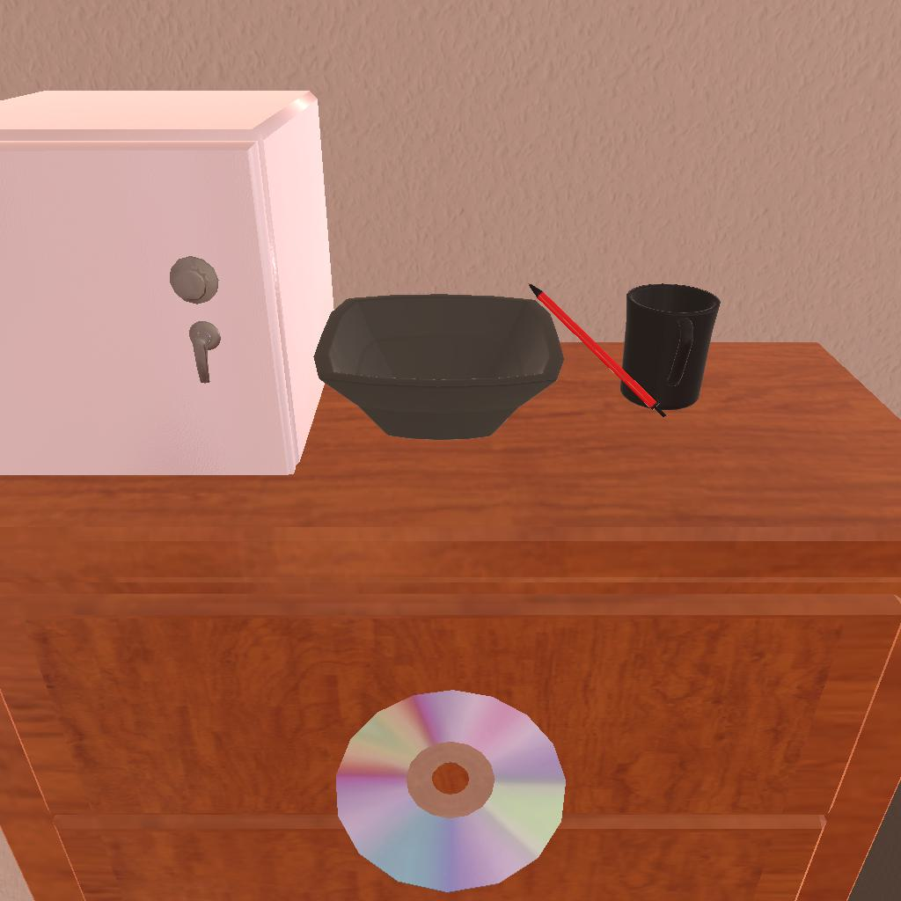

---------------------------------------------------------task: 6---------------------------------------------------------
--------------------------------------------------------------------------------------------------------------------------------------------------------------------
--------------------------------------------------------------------------------------------------------------------------------------------------------------------
Step:--------------------------------------------------------------------------12-------------------------------------------------------------------------------
----------------------------------------
VLM Prompt:
Image1:
Image2:
**Instruction**
1. Analyze the provided images to identify all visible household objects and compare the difference between images (e.h. whether the object is opened or not and taken on hand or not), focusing on those relevant to the task description "put some cd on safe."
2. Use the analysis of images and the task hint "The agent must find an object of the desired type, pick it up, find the correct location to place it, and put it down there." to answer the question: what is the most reasonable action in the choices for the task description "put some cd on safe"?
3. Decide and write the answer using the template: The answer is: (i): , where i is the real number. If there is no desired object in images, search every place based on **Initial Observation** to find the object. And if no one is exactly correct, choose a similar answer.
**Initial Observation**
You are in the middle of a room. Looking quickly around you, you can see bed (1-2), dresser (1), sidetable (1-2), drawer (1-11), desk (1), garbagecan (1), safe (1)
**Answer Choices**
(1): go to bed 1
(2): go to dresser 1
(3): go to bed 2
(4): go to sidetable 1
(5): go to drawer 1
(6): go to drawer 2
(7): go to sidetable 2
(8): go to drawer 3
(9): go to drawer 4
(10): go to desk 1
(11): go to garbagecan 1
(12): go to drawer 5
(13): go to drawer 6
(14): go to drawer 7
(15): go to drawer 8
(16): go to drawer 9
(17): go to drawer 10
(18): go to drawer 11
(19): open safe 1
(20): put cd 1 in/on safe 1
(21): examine cd 1
(22): examine safe 1
**Answer**
Let's think step by step by following the instructions.
----------------------------------------
----------------------------------------
Original Response:
First, we analyze the images provided:
In Image 1, we can see a pink safe, a black bowl, a black cup with a red straw, and a CD on the wooden surface of what seems to be a dresser or a side table. The safe is closed, and the CD is on the surface, not in anyone's hand.
In Image 2, the scene is almost identical, with the only difference being that the CD that was previously on the surface is now missing, indicating it has been taken.
Now, let's use this analysis in the context of the task description "put some cd on safe." The task requires finding a CD, picking it up, and putting it on the safe. Given the initial observation, we are in a room with multiple furniture items, one of which is a safe, and we have spotted a CD in Image 1, which is then missing in Image 2, suggesting it has been picked up.
Among the answer choices provided, the most reasonable action relevant to the task would be to put the CD on the safe. Since we have observed that the CD has been taken in Image 2 and is no longer on the surface, the next logical action would be to place it on the safe.
The answer is: (20): put cd 1 in/on safe 1.
----------------------------------------
----------------------------------------
>>> Refine Original VLM Response and Get Pure Action: put cd 1 in/on safe 1
----------------------------------------
-----------------------------------------------------------------
Running time: 10.725324153900146 seconds
Total Money: 2.429760000000001
-----------------------------------------------------------------
-----------------------------------------------------------------
Text Observation:Nothing happens.
-----------------------------------------------------------------
UNSUCCEED